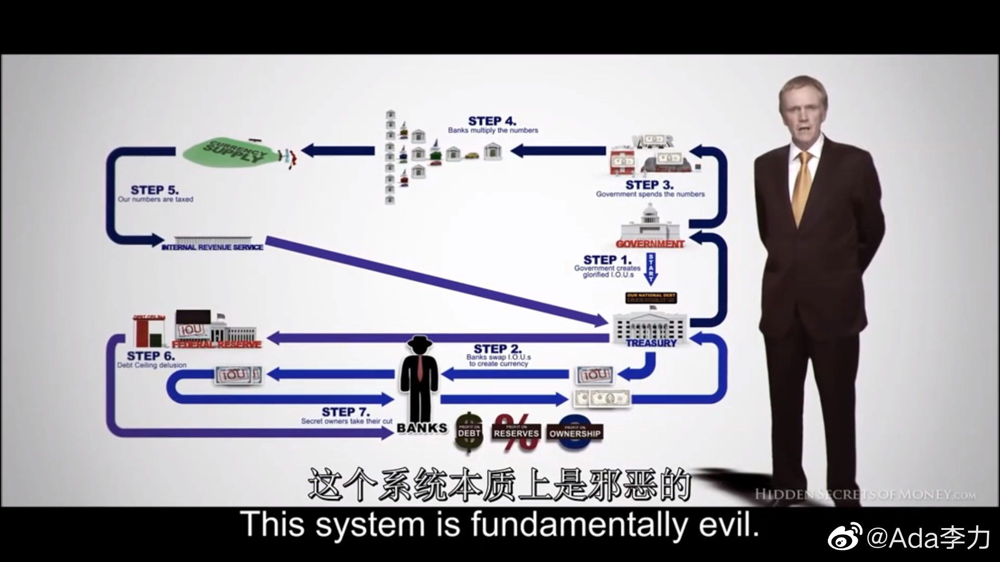

#一个人的企业#
《货币的秘密》第4集的名称是史上最大的骗局，骗局说的是美国的这整套财政，货币和金融系统。主持人认为这也是造成了有史以来贫富差距最大的根源。
看了下图中的这个流程，大概能理解主持人所说的，债务只会不断地增长，而不可能出现通货紧缩。如果出现通货紧缩，那意味着整个经济就崩溃了。各个国家比的只是谁更没底线而已，也就是说债务增长的速度快慢而已。
整个系统最惨的就是劳动者和中小企业，这些人只要留在这个系统，就要被奴役和剥削。因为所谓劳动换来的财富，这些财富用通货(currency)来表示的话，其实全是债务。而包含着债务的通货是有利息的，未来赚的一块钱，永远还不上你今天借的一块钱。
这个纪录片还真是能洗脑。
《货币的秘密》第4集的名称是史上最大的骗局，骗局说的是美国的这整套财政，货币和金融系统。主持人认为这也是造成了有史以来贫富差距最大的根源。
看了下图中的这个流程，大概能理解主持人所说的，债务只会不断地增长，而不可能出现通货紧缩。如果出现通货紧缩，那意味着整个经济就崩溃了。各个国家比的只是谁更没底线而已，也就是说债务增长的速度快慢而已。
整个系统最惨的就是劳动者和中小企业，这些人只要留在这个系统，就要被奴役和剥削。因为所谓劳动换来的财富，这些财富用通货(currency)来表示的话，其实全是债务。而包含着债务的通货是有利息的，未来赚的一块钱，永远还不上你今天借的一块钱。
这个纪录片还真是能洗脑。
- 